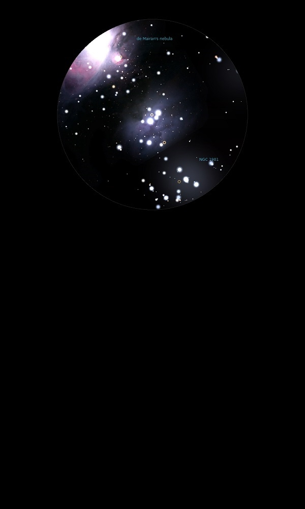

NGC 1977
Bright Nebula in Orion
NGC 1977
Mag 7.0
Running Man Nebula
11/01/14
Hint of haze around a bowl of four stars with another at it's
focus
Two of the stars are quite bright, c Ori, HIP 26237 at Mag 4.55
and 45 Ori, HIP 26268 at Mag 5.20
16/01/15
Clear bright nebulosity in 18mm with UHC filter around c Ori
(HIP 26237) at Mag 4.55 extending to 45 Ori (HIP 26268) at Mag
5.20
08/12/15
Less apparent haze around c Ori, 42 Ori, HIP 26237 at Mag 4.55
and 45 Ori, HIP 26268 at Mag 5.20 than around Nu Ori, but
perhaps because these two stars are brighter
No feel for the extended nebulosity
10/02/16
In 12mm the asterism of stars can be likened to a running man
with HIP 26137 at Mag 6.75 as his rear foot, three stars of Mags
8.8, 7.3 and 9.7 in a line forming his hips and front knee (the
nebula NGC 1973 is around the middle star) and then down to his
front foot at Mag 8.85
The body being the six stars around NGC 1977 itself, with the
brightest of the nebula around c Ori, 42 Ori, HIP 26237 at Mag
4.55 and 45 Ori, HIP 26268 at Mag 5.20
Within the same FOV are two other nebula which seem to be part
of NGC 1977, NGC 1973 and NGC 1975